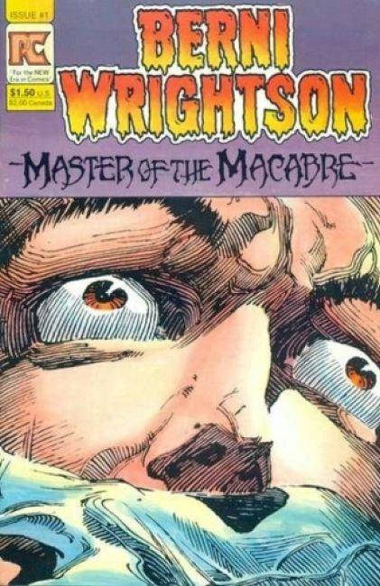
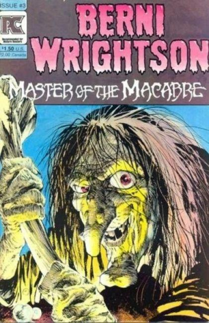
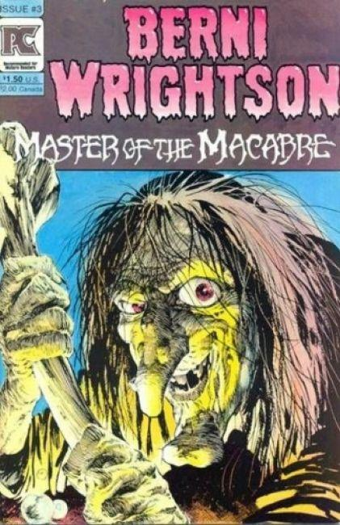
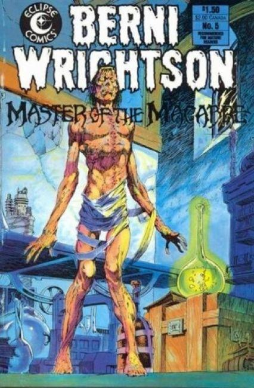
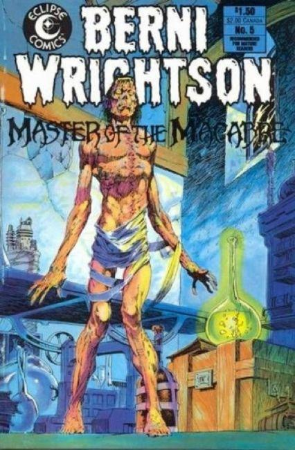

Berni Wrightson Master of the Macabre

 

 

Series: 5 issue reprint mini series
Illustrator: Berni Wrightson
Writer: Berni Wrightson
Publisher: 1983 PC
Issue #1
- "The muck monster." Reprinted from Eerie #68. In a variation on the Frankenstein story, the monster gains his freedom in a very unusual way.
- "The Pepper Lake Monster." Reprinted from Eerie #58. A man attempts to capture the famous Pepper Lake Monster. Even if he succeeds though, the townspeople might have other ideas.
- "The Black Cat." Reprinted from Creepy #62. Adapted from the story by Edgar Allen Poe. A couples pet cat develops an intense interest in the man of the house. When this attention drives the man to the brink of madness, the man takes drastic action. The ebony feline may have the last laugh however.
Issue #2
- "Jennifer." Reprinted from Creepy #63. Story by Bruce Jones. A man comes across another man about to execute a deformed girl in the forest. Saving her, he takes her into his family. It is not long though, before he finds out why she ended up in the predicament he found her in.
- "Cool Air." Reprinted from Eerie #62. Script by Berni Wrightson adapted from the story by H. P. Lovecraft. A man finds out why his upstairs neighbor, Dr. Munoz keeps his home so cold. It is not a pleasant answer.
- "Four Classic Martians." Image reprinted from Creepy #87.
- "The Laughing Man." Reprinted from Creepy #95. Story by Bruce Jones. Two explorers find the mythical Ape-Men in Africa. This turns out not to be a good thing.
- "Clarke." Reprinted from Creepy #77. Story by Bruce Jones. A mans careless mistake literally comes back to haunt him.
Issue #3
- "King of the Mountain, Man." Reprinted from Badtime Stories (1972). Story by Berni Wrightson. A prospector kills his partner and takes all of his possessions. Too bad none of them are what they seem to be.
- "A Martian Saga." Reprinted from Creepy #87. Story by Nicola Cuti. A man crash lands on Mars. Good fortune seems to follow him, but now his air is running out.
- "Night Fall." Reprinted from Eerie #60. Story by Bill DuBay. Be careful when your kids tell you about the monsters under their bed. Sometimes theyre telling the truth!
- "The Last Hunters." Reprinted from Badtime Stories (1972). Story by Berni Wrightson. The last dregs of a mutated humanity may be responsible for the being hunting them to extinction.
Issue #4
- "The Task." Reprinted from Badtime Stories (1972). Story and art by Berni Wrightson. With a war axe fastened to his wrist, a warrior must kill five beings to be free of the compulsion to kill. But the axe does not differentiate between friend and foe.
- Untitled. Reprinted from Badtime Stories (1972). Story and art by Berni Wrightson. A young boy finds the courage to face his abusive father in his dreams.
- "The Legend of Sleepy Hollow." Reprinted from This is Legend (1970). Adaptation by Virgil North. Art by Jeff Jones, Alan Weiss and Berni Wrightson. Adapted from the story by Washington Irving. Ichabod Cranes encounter with the Headless Horseman is dramatized.
Issue #5
- "Feed It." Reprinted from Web of Horror #3. Be careful what kind of creatures you keep as pets, lest you become their next meal.
- "Mother Toad." Reprinted from Web of Horror #2. In the aftermath of nuclear war, Mother Nature plays some strange jokes on the human race.
- "Limpstrel." Reprinted from various issues of Witzend. Three one page cartoons featuring an innocent young man in a very strange world.
- "Aint She Sweet?" Reprinted from Witzend #7. An elderly man decides to kill his wife. Too bad she wont let him away that easy.
- "Uncle Bills Barrel." Reprinted from Graphic Showcase (1967) #2. Uncle Bill sure loved his whisky. So much so, that even after he died he wouldnt let anyone touch a drop of what was his.